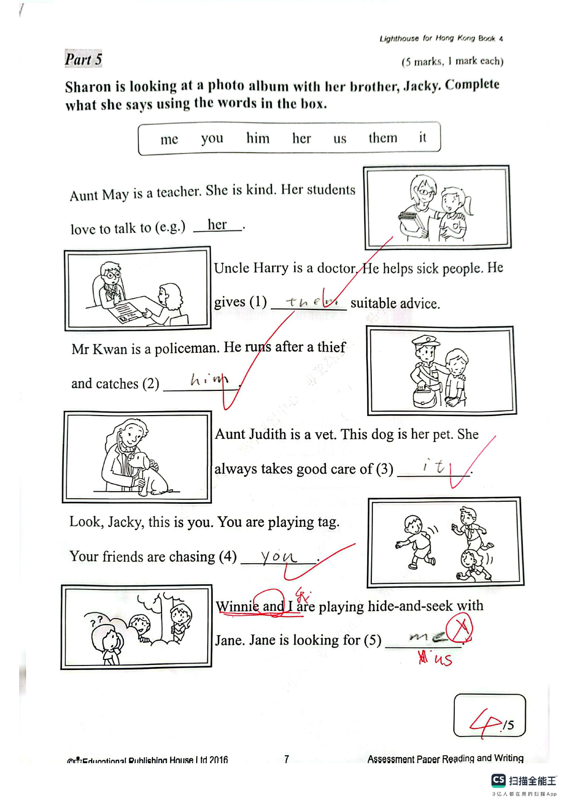
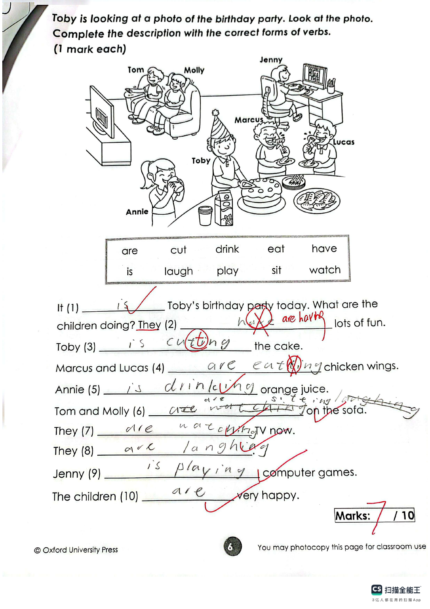
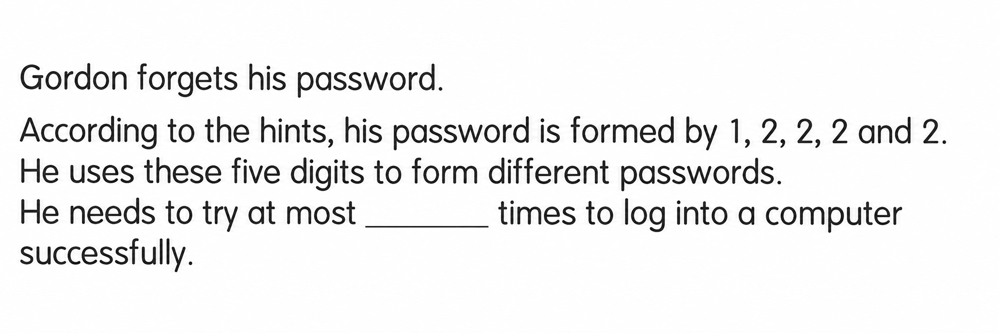

Answer: (a) 35 seconds; (b) 33 seconds or 37 seconds
已掌握
| # | 单词/词组 | 中文意思 | 例句/说明 | 已掌握 |
|---|---|---|---|---|
| noun 名词 | ||||
| 1 | hotel | 酒店 | We stayed in a hotel. | |
| 2 | postcard | 明信片 | I sent a postcard to my friend. | |
| 3 | garden | 花园 | We play in the garden. | |
| 4 | fur | 皮毛 | The rabbit has soft fur. | |
| 5 | housework | 家务 | I help my parents with the housework. | |
| 6 | Thursday | 周四 | We have art on Thursday. | |
| 7 | case | 盒子 | Put your pencils in the case. | |
| verb 动词 | ||||
| 8 | hate | 讨厌 | I hate noisy places. | |
| 9 | miss | 错过 | Hurry up, or we will miss the bus. | |
| 10 | celebrate | 庆祝 | We celebrate my birthday. | |
| adjective 形容词 | ||||
| 11 | famous | 著名的 | This is a famous place. | |
| 12 | quiet | 安静的 | Please be quiet. | |
| 13 | brave | 勇敢的 | The brave boy helps others. | |
| 14 | polite | 礼貌的 | It is polite to say thank you. | |
| 15 | lazy | 懒惰的 | The lazy boy did not want to get out of bed. | |
| 16 | same | 相同的 | We are in the same class. | |
| 17 | beautiful | 美丽的 | The flower is beautiful. | |
| 18 | tired | 累的 | I feel tired after the long walk. | |
| 19 | correct | 正确 | This answer is correct. | |
| verb/noun 动词/名词 | ||||
| 20 | change | 改变，找零 | I can change my answer. | |
| # | 单词/词组 | 中文意思 | 例句/说明 | 已掌握 |
|---|---|---|---|---|
| adjective 形容词 | ||||
| 1 | dangerous | 危险的 | The road is dangerous. | |
| 2 | cute | 可爱的 | There are many cute dogs in the animal shelter. | |
| noun 名词 | ||||
| 3 | example | 例子 | This is an example. | |
| 4 | seed | 种子 | The bird pecks a seed. | |
| 5 | slide | 滑梯 | The child goes down the slide. | |
| 6 | principal | 校长 | Our principal welcomed the new students. | |
| 7 | sculpture | 雕塑 | We saw a stone sculpture in the park. | |
| 8 | prepositions | 介词 | We are learning prepositions today. | |
| 9 | costume | 戏服 | I wear a costume at the festival. | |
| 10 | improvement | 提升 | There is an improvement in my handwriting. | |
| 11 | lettuce | 生菜 | Is there any lettuce in the fridge? | |
| 12 | culture | 文化 | We learn about our own culture at school. | |
| 13 | kung fu | 功夫 | I like lion dances and kung fu. | |
| 14 | parade | 游行 | They wear green clothes and have parades. | |
| noun phrase 名词短语 | ||||
| 15 | secondary school student | 中学生 | My cousin is a secondary school student. | |
| 16 | country park | 郊野公园 | I want to go to the country park. | |
| verb 动词 | ||||
| 17 | save | 拯救；节省 | We can save the bird. Turning off the lights can save energy. | |
| 18 | dry | 弄干 | I dry my dog with a towel after his bath. | |
| 19 | brush | 刷（毛），梳 | I brush my dog's fur every day. | |
| preposition 介词 | ||||
| 20 | in | 在（某月/某年/某季节） | It's in July. | |
| 21 | between | 在……之间 | His classroom is between Classroom 3A and Classroom 3C. | |
| phrase 短语 | ||||
| 22 | red packet | 红包 | Grandma gave me a red packet at Chinese New Year. | |
| verb phrase 动词短语 | ||||
| 23 | play table tennis | 打乒乓球 | We play table tennis at the activity centre. | |
| 24 | play Chinese chess | 下中国象棋 | I can't play Chinese chess or Chinese checkers. | |
| 25 | feed animals | 喂动物 | We can feed animals on the farm. | |
| 26 | watching cartoons | 看卡通片 | She likes watching cartoons. | |
| 27 | paint pictures | 画画 | I like to paint pictures after school. | |
| 28 | blow out the candles | 吹蜡烛 | I blow out the candles on my birthday cake. | |
| 29 | waste food | 浪费食物 | I don't want to waste food anymore. | |
| 30 | throw away | 扔掉，丢弃 | We do not throw away things like clothes, books or toys. | |
| # | 单词/词组 | 中文意思 | 例句/说明 | 已掌握 |
|---|---|---|---|---|
| time/date 时间日期 | ||||
| 1 | October | 十月 | October is the tenth month. | |
| 2 | Sunday | 星期日 | Sunday is a weekend day. | |
| time unit 时间单位 | ||||
| 3 | day | 日 | A day has 24 hours. | |
| 4 | hour | 时 | An hour has 60 minutes. | |
| directions 方向 | ||||
| 5 | west | 西 | The sun sets in the west. | |
| numbers 数字 | ||||
| 6 | six | 6 | Six is 6. | |
| 7 | ten | 10 | Ten is 10. | |
| 8 | eleven | 11 | Eleven is 11. | |
| 9 | thirteen | 13 | Thirteen is 13. | |
| solid shape 立体图形 | ||||
| 10 | pentagonal pyramid | 五棱锥 | A pentagonal pyramid has one pentagonal base and five triangular side faces. | |
| 11 | cylinder | 圆柱 | A cylinder has two circular faces. | |
| 12 | face | 面 | A cube has six faces. | |
| 13 | lateral face | 侧面 | A lateral face is on the side. | |
| plane shape 平面图形 | ||||
| 14 | rectangle | 长方形 | A rectangle has four right angles. | |
| geometry 几何 | ||||
| 15 | acute angle | 锐角 | An acute angle is smaller than a right angle. | |
| # | 单词/词组 | 中文意思 | 例句/说明 | 已掌握 |
|---|---|---|---|---|
| operations 运算 | ||||
| 1 | addition | 加法 | Addition means putting numbers together. | |
| 2 | subtraction | 减法 | Subtraction means taking away. | |
| 3 | be left | 剩下的 | How many apples will be left? | |
| geometry 几何 | ||||
| 4 | parallel | 平行 | Parallel lines never meet. | |
| 5 | curve | 曲线 | Draw a curve. | |
| 6 | adjacent side | 邻边 | These are adjacent sides. | |
| 7 | dotted line | 虚线（点线） | Draw a dotted line between the two points. | |
| answer 答案 | ||||
| 8 | answer | 答案 | Write the answer in the box. | |
| 9 | result | 结果 | Check the result after you calculate. | |
| 10 | correct | 正确的 | Choose the correct answer. | |
| place value 位值 | ||||
| 11 | tens | 十位 | The digit is in the tens place. | |
| 12 | units | 个位 | The digit is in the units place. | |
| comparison 比较 | ||||
| 13 | least | 最小的；最少的 | Which number is the least? | |
| time/date 时间日期 | ||||
| 14 | small division | 小格（钟面上的一分钟刻度） | The minute hand moves one small division in one minute. | |
| 15 | second hand | 秒针 | The second hand goes around the clock once in one minute. | |
| operations calculation 运算 | ||||
| 16 | dividend | 被除数 | The dividend is divided by the divisor. | |
| 17 | divisor | 除数 | The divisor divides the dividend. | |
| currency money 货币 | ||||
| 18 | cent | 分 | One cent is a small amount of money. | |
| 19 | exchange | 交换 | We exchange money at the counter. | |
| 20 | note | 纸币 | This is a five-dollar note. | |
| 21 | coin | 硬币 | The coin is round. | |
| measurement 测量 | ||||
| 22 | fill | 填满 | Fill the jug with water. | |
| 23 | ruler | 尺子 | Use a ruler to measure the length of the line segment. | |
| 24 | centimetre | 厘米 | A centimetre is a small unit of length. | |
| 25 | length | 长度 | Find the length of the line. | |
| 26 | gram | 克 | One gram is one thousandth of a kilogram. | |
| 27 | weight | 重量 | The weight of this bag is 2 kg. | |
| data charts 统计图 | ||||
| 28 | pictogram | 象形图 | Read the pictogram. | |
| 句型结构 | ||||
| 29 | ... is to the north of ... | ......位于......的北侧。 | The playground is to the north of the hall. | |
| plane shape 平面图形 | ||||
| 30 | lower base | 下底 | The lower base of this trapezium is 7 cm long. | |



